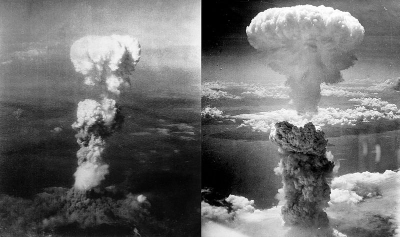

The atomic bombings of the cities of Hiroshima and Nagasaki in Japan were conducted by the United States during the final stages of World War II in 1945. The two events are the only use of nuclear weapons in war to date.
Following a firebombing campaign that destroyed many Japanese cities, the Allies prepared for a costly invasion of Japan. The war in Europe ended when Nazi Germany signed its instrument of surrender on 8 May, but the Pacific War continued. Together with the United Kingdom and the Republic of China, the United States called for a surrender of Japan in the Potsdam Declaration on 26 July 1945, threatening Japan with "prompt and utter destruction". The Japanese government ignored this ultimatum. American airmen dropped Little Boy on the city of Hiroshima on 6 August 1945, followed by Fat Man over Nagasaki on 9 August.
Within the first two to four months of the bombings, the acute effects killed 90,000–166,000 people in Hiroshima and 60,000–80,000 in Nagasaki, with roughly half of the deaths in each city occurring on the first day. The Hiroshima prefecture health department estimated that, of the people who died on the day of the explosion, 60% died from flash or flame burns, 30% from falling debris and 10% from other causes. During the following months, large numbers died from the effect of burns, radiation sickness, and other injuries, compounded by illness.  In a US estimate of the total immediate and short term cause of death, 15–20% died from radiation sickness, 20–30% from burns, and 50–60% from other injuries, compounded by illness. In both cities, most of the dead were civilians, although Hiroshima had a sizeable garrison.
On 15 August, six days after the bombing of Nagasaki, Japan announced its surrender to the Allies, signing the Instrument of Surrender on 2 September, officially ending World War II. The bombings led, in part, to post-war Japan's adopting Three Non-Nuclear Principles, forbidding the nation from nuclear armament. The role of the bombings in Japan's surrender and their ethical justification are still debated.
In 1945, the Pacific War between the Empire of Japan and the Allies of World War II had entered its fourth year. World War II was not winding down. Instead, the fighting was being prosecuted with ever-increasing fury. Of the 1.25 million battle casualties incurred by the United States in World War II, including both soldiers killed in action and wounded in action, nearly one million occurred in the twelve-month period from June 1944 to June 1945. December 1944 saw American battle casualties hit an all-time monthly high of 88,000 as a result of the German Ardennes Offensive. [2]
In the Pacific during this period, the Allies captured the Mariana and Palau Islands, [3] returned to the Philippines, [4] and invaded Borneo. [5] The policy of bypassing Japanese forces was abandoned. In order to free troops for use elsewhere, offensives were undertaken to reduce the Japanese forces remaining in Bougainville, New Guinea and the Philippines. [6] In April 1945, American forces had landed on Okinawa, where heavy fighting would continue until June. Along the way, the ratio of Japanese to American casualties dropped from 5 to 1 in the Philippines to 2 to 1 on Okinawa. [2]